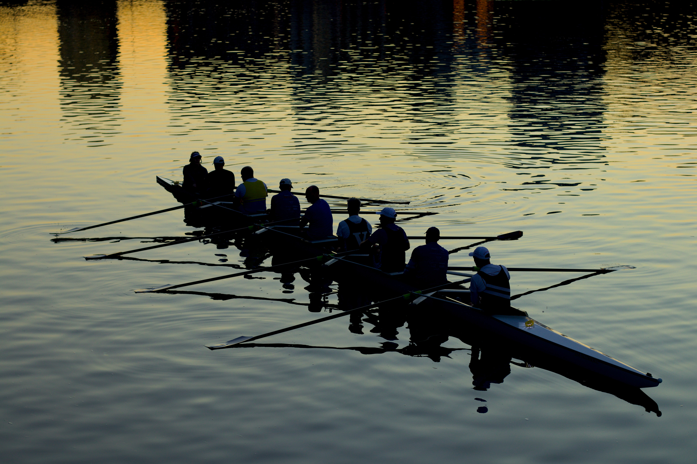

The city
Mantova (Mantua in English) is a small town in the northern Italian
region of Lombardy.
It is surrounded by three artificial lakes and it is known for its artistic heritage as well as its
amazing cuisine.
Things to do in Mantua:
- Classic car races:
Mantua regularly hosts classic car races.
A classic car speeding through the streets of Mantua
Photo by Maxim Klimashin on Unsplash - Rowing:
The lakes that surround the town are the perfect place for rowing.
 Photo by Mitchell Luo on Unsplash - Sightseeing:
You can also just walk around and admire the scenery and the art.

This is the view of the town from my school.
| City | Distance from Mantua | |
|---|---|---|
| Milan |

|
About 160km |
| Venice |

|
About 155km |
| Rome |

|
About 500km |
| Verona |
|
About 45km |
Cuisine
Schiacciatina
This is an everyday food that you can bring anywhere. It is similar to bread but it is crunchy.
Tortelli di zucca
Attribution-ShareAlike (CC BY-SA 2.0)
This dish is traditionally made for Christmas. It is egg-based pasta filled with mashed pumpkin.
Elvezia
This file is licensed under the Creative Commons Attribution-Share Alike 3.0 Unported license.
This is a layered cake stuffed with zabaione and cream.
Sugolo
These are all the steps you need to follow to make yourself a delicious grape pudding called Sugolo!
- Cook as many grapes as you like in a saucepan;
- Once they are cooked, sift them until you are left with just the must;
- Put the must on the stove and mix it with flour;
- Let it simmer until it becomes dense;
- Let it cool down;
- Enjoy!!!
Art
Mantua was named "Capital of Italian culture and art" in 2016.
Here are some examples of the art you can find in Mantua!
Cathedrals:
Photo by Federico86, licensed by
Creative Common Licenses GNU Free Documentation License.
Photo by Davide Papalini, licensed by
Creative Common Licenses Attribution-Share Alike 3.0 Unported license.
Photo by Rui Alves on Unsplash
The Ducale Palace
The Ducale Palace is a group of buildings built in the Middle Ages that belonged to the noble family
Gonzaga.
These buildings store a great amount of Mantua's art.